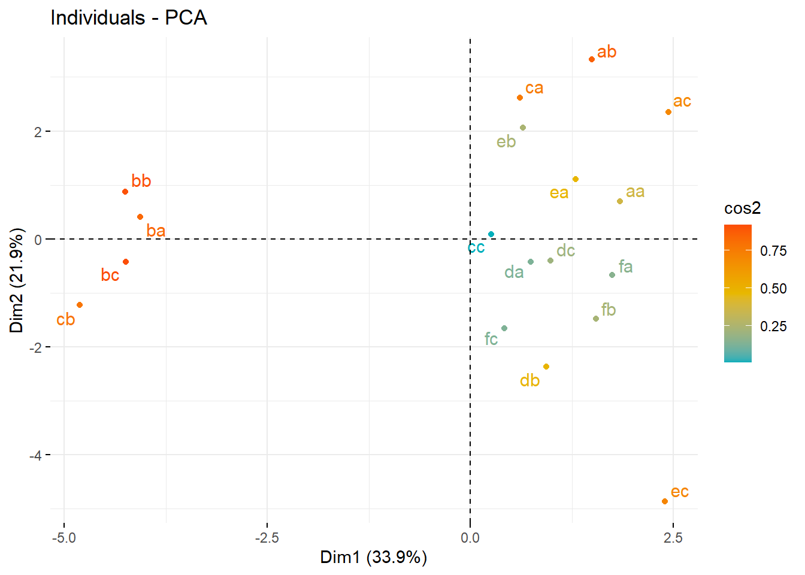
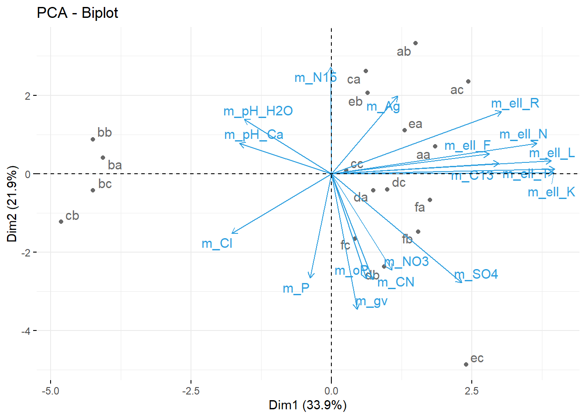

Prinicpal Component Analysis
I am setting up a notebook for how to run principal component analyses. PCA techniques are very useful for data exploration when the dataset is ‘wide’, there are a lot of columns for the amount of rows of datapoints. A PCA looks for correlations among the columns by searching for vectors (eigenvectors) that correlate stongly with the data in the columns (high eigenvalues). By searchinig for this eigenvectors with high eigenvalues we can hopefully reduce the dimensionality of the dataset.
Information Sources:
- Datacamp.com Intro to PCA
- Stanford Multivariate analysis in R
- Little book of R Using R for Multivariate Analysis
- Richard Lent Tutorial on Multivariate Analysis
- Principal Component Methods in R: Practical Guide
- using the
factoextra package - see Shiny application
Factoshiny
- using the
PCA is a type of linear transformation on a given data set that has values for a certain number of variables (coordinates) for a certain amount of spaces. This linear transformation fits this dataset to a new coordinate system in such a way that the most significant variance is found on the first coordinate, and each subsequent coordinate is orthogonal to the last and has a lesser variance. In this way, you transform a set of x correlated variables over y samples to a set of p uncorrelated principal components over the same samples.
Where many variables correlate with one another, they will all contribute strongly to the same principal component. Each principal component sums up a certain percentage of the total variation in the dataset. Where your initial variables are strongly correlated with one another, you will be able to approximate most of the complexity in your dataset with just a few principal components. As you add more principal components, you summarize more and more of the original dataset. Adding additional components makes your estimate of the total dataset more accurate, but also more unwieldy.
Simply put, an eigenvector is a direction, such as “vertical” or “45 degrees”, while an eigenvalue is a number telling you how much variance there is in the data in that direction. The eigenvector with the highest eigenvalue is, therefore, the first principal component.
Standardising Variables
If you want to compare different variables that have different units, are very different variances, it is a good idea to first standardise the variables.
Yet, whether you want to standardise or not depends on the question you are asking, see this stack exchange discussion
If variables are not standardised the first principal component will be dominated by variables which show the largest variance.
- Why is the default to rescale the data?
You tend to use the covariance matrix when the variable scales are similar and the correlation matrix when variables are on different scales.
Using the correlation matrix is equivalent to standardizing each of the variables (to mean 0 and standard deviation 1)
Recall the difference between correlation and covariance. In correlation you rescale by dividing by the norm of each dimension. This is more in line with what we’re interested in. If one of our variable is measured in inches and then we decide to change that measurement to feet, the variance decreases by a factor of \(12^{-2}\). We don’t want the result of our PCA to change based on the units a dimension is measured in. To avoid problems like this, we rescale our data so that each dimension has variance 1.
Thus, it would be a better idea to first standardise the variables so that they all have variance 1 and mean 0, and to then carry out the principal component analysis on the standardised data. This would allow us to find the principal components that provide the best low-dimensional representation of the variation in the original data, without being overly biased by those variables that show the most variance in the original data.
You can standardise variables in R using the scale() function.
For example, to standardise the values of the 18 soil variables at each site, we type:
standardisedvalues <- as.data.frame(scale(T.18[1:18]))
Note that we use the as.data.frame() function to convert the output of scale() into a data frame, which is the same type of R variable that the T.18 variable.
We can check that each of the standardised variables stored in standardisedvalues has a mean of 0 and a standard deviation of 1 by typing:
#sapply(standardisedvalues,mean)
# V2 V3 V4 V5 V6 V7
# -8.591766e-16 -6.776446e-17 8.045176e-16 -7.720494e-17 -4.073935e-17 -1.395560e-17
# V8 V9 V10 V11 V12 V13
# 6.958263e-17 -1.042186e-16 -1.221369e-16 3.649376e-17 2.093741e-16 3.003459e-16
# V14
# -1.034429e-16
#sapply(standardisedvalues,sd)
# V2 V3 V4 V5 V6 V7 V8 V9 V10 V11 V12 V13 V14
# 1 1 1 1 1 1 1 1 1 1 1 1 1We see that the means of the standardised variables are all very tiny numbers and so are essentially equal to 0, and the standard deviations of the standardised variables are all equal to 1.
- Why is the default to center?
Suppose that we did not center. We can relate PCA to directions with highest covariance. When we calculate sample covariance, we subtract the mean from each observation. If we skip this step (not centering), then the first axis of the PCA would always be pointing towards the center of mass.
Some functions in R that calculate the PCA do not center by default. There might be a good reason to not center (e.g., you centered a large dataset already and you are only looking at a subsample), but in general, you should always center your data when doing a PCA.
Constructing a PCA
The prcomp package contains an arguement scale which scales the variables used in a PCA, so it is not necessary to manually scale as above.
Loading data, selecting columns to include in PCA and running a scaled and centred PCA.
Env_18 <- read.csv("PCA.csv")
colnames(Env_18)[1] <- "Param"
for(i in 1:18){
rownames(Env_18)[i] <- as.character(droplevels(Env_18$Param[i]))
}
Env_18 <- Env_18[,-1]
#str(Env_18)
Env.18.pca <- prcomp(Env_18, center = TRUE, scale. = TRUE)
#summary(Env.18.pca)
#str(Env.18.pca)
#Transposing the data so we are looking at correlation between the soil characteristics themselves and not correleations among the sites.
T.18 <- as.data.frame(t(Env_18))
T.18.pca <- prcomp(T.18, center = TRUE, scale. = TRUE)
#summary(T.18.pca)- the centre, scaling, standard deviation of each principal component.
$center, $scale, $sdev- The relationship (correlation or anticorrelation, etc) between the initial variables and the principal components
$rotation- The values of each sample in terms of the principal components
$xTheory Behind PCA Results
This code will calculate the PCA results for variables (i.e. columns): coordinates, cos2, and contributions
- var.coord = loadings * the component standard deviations
- var.cos2 = var.coord^2
- var.contrib. The contribution of a variable to a given principal component is (in percentage) : (var.cos2 * 100) / (total cos2 of the component)
#helper function
var_coord_func <- function(loadings, comp.sdev){
loadings*comp.sdev
}
# Compute Coordinates
loadings <- T.18.pca$rotation
sdev <- T.18.pca$sdev
var.coord <- t(apply(loadings, MARGIN = 1, var_coord_func, sdev))
head(var.coord[, 1:4])## PC1 PC2 PC3 PC4
## m_gv 0.1112659 -0.8397329 -0.27438780 -0.02808150
## m_pH_H2O -0.3770343 0.3365268 -0.78532581 -0.02319610
## m_pH_Ca -0.3978461 0.1885975 -0.73551774 -0.08737664
## m_CN 0.1787622 -0.6555604 0.60132147 0.15584940
## m_Cl -0.4319542 -0.3695436 -0.07478097 0.57131811
## m_NO3 0.2612686 -0.5962655 -0.49718902 -0.44795962#compute Cos2 (the variable components squared), or quality of representation on given dimension
var.cos2 <- var.coord^2
head(var.cos2[, 1:4])## PC1 PC2 PC3 PC4
## m_gv 0.01238009 0.70515135 0.075288662 0.0007885708
## m_pH_H2O 0.14215486 0.11325025 0.616736633 0.0005380592
## m_pH_Ca 0.15828153 0.03556902 0.540986346 0.0076346773
## m_CN 0.03195592 0.42975950 0.361587515 0.0242890340
## m_Cl 0.18658447 0.13656246 0.005592193 0.3264043823
## m_NO3 0.06826130 0.35553253 0.247196926 0.2006678208#Compute contributions
comp.cos2 <- apply(var.cos2, MARGIN = 2, FUN = sum)
contrib <- function(var.cos2, comp.cos2){var.cos2*100/comp.cos2}
var.contrib <- t(apply(var.cos2, MARGIN = 1, contrib, comp.cos2))
head(var.contrib[, 1:4])## PC1 PC2 PC3 PC4
## m_gv 0.2028662 17.8681349 2.2542900 0.06399317
## m_pH_H2O 2.3294185 2.8696972 18.4663026 0.04366394
## m_pH_Ca 2.5936781 0.9012987 16.1981906 0.61956032
## m_CN 0.5236453 10.8898617 10.8266383 1.97107503
## m_Cl 3.0574637 3.4604153 0.1674412 26.48798338
## m_NO3 1.1185629 9.0089924 7.4015601 16.28435827This code will calculate PCA results for individuals (i.e. rows)
- ind.coord = res.pca$x
- Cos2 of individuals. Two steps:
- Calculate the square distance between each individual and the PCA center of gravity: d2 = [(var1_ind_i - mean_var1)/sd_var1]^2 + …+ [(var10_ind_i - mean_var10)/sd_var10]^2 + …+..
- Calculate the cos2 as ind.coord^2/d2
- Contributions of individuals to the principal components: 100 * (1 / number_of_individuals)*(ind.coord^2 / comp_sdev^2). Note that the sum of all the contributions per column is 100
# Coordinates of individuals
#::::::::::::::::::::::::::::::::::
ind.coord <- T.18.pca$x
head(ind.coord[, 1:4])## PC1 PC2 PC3 PC4
## aa 1.843619 0.6984034 1.39085931 0.8521719
## ab 1.499047 3.3314063 -0.13836903 -0.4757199
## ac 2.438382 2.3485011 -0.11155408 -1.0069934
## ba -4.068176 0.4089068 0.67238375 -1.3135724
## bb -4.251161 0.8734186 0.05115095 -0.9593515
## bc -4.245708 -0.4283674 0.01116178 -0.5839797# Cos2 of individuals
#:::::::::::::::::::::::::::::::::
# 1. square of the distance between an individual and the
# PCA center of gravity
center <- T.18.pca$center
scale<- T.18.pca$scale
getdistance <- function(ind_row, center, scale){
return(sum(((ind_row-center)/scale)^2))
}
d2 <- apply(T.18,1,getdistance, center, scale)
# 2. Compute the cos2. The sum of each row is 1
cos2 <- function(ind.coord, d2){return(ind.coord^2/d2)}
ind.cos2 <- apply(ind.coord, 2, cos2, d2)
head(ind.cos2[, 1:4])## PC1 PC2 PC3 PC4
## aa 0.3221090 0.046224592 1.833272e-01 0.06882002
## ab 0.1444967 0.713645955 1.231134e-03 0.01455225
## ac 0.3631827 0.336901791 7.601385e-04 0.06194055
## ba 0.8227422 0.008312142 2.247494e-02 0.08577727
## bb 0.8706902 0.036753047 1.260538e-04 0.04434085
## bc 0.9101629 0.009265135 6.290511e-06 0.01721926# Contributions of individuals
#:::::::::::::::::::::::::::::::
contrib <- function(ind.coord, comp.sdev, n.ind){
100*(1/n.ind)*ind.coord^2/comp.sdev^2
}
ind.contrib <- t(apply(ind.coord, 1, contrib,
T.18.pca$sdev, nrow(ind.coord)))
head(ind.contrib[, 1:4])## PC1 PC2 PC3 PC4
## aa 3.094253 0.6866526 3.2179115510 3.273971
## ab 2.045708 15.6235453 0.0318482443 1.020288
## ac 5.412734 7.7643643 0.0207003940 4.571658
## ba 15.066517 0.2353819 0.7520420308 7.779083
## bb 16.452371 1.0739134 0.0043522633 4.149311
## bc 16.410186 0.2583195 0.0002072405 1.537503PCA Visualisation
Now it’s time to plot the PCA.
we will first look at a package ggbiplot.
You will make a biplot, which includes both the position of each sample in terms of PC1 and PC2 and also will show you how the initial variables map onto this. You will use the ggbiplot package, which offers a user-friendly and pretty function to plot biplots. A biplot is a type of plot that will allow you to visualize how the samples relate to one another in our PCA (which samples are similar and which are different) and will simultaneously reveal how each variable contributes to each principal component.
library(devtools)## Loading required package: usethis#install_github("vqv/ggbiplot")
library(ggbiplot)## Loading required package: ggplot2## Warning: package 'ggplot2' was built under R version 3.6.3## Loading required package: plyr## Loading required package: scales## Loading required package: gridlibrary(ggalt)## Warning: package 'ggalt' was built under R version 3.6.3## Registered S3 methods overwritten by 'ggalt':
## method from
## grid.draw.absoluteGrob ggplot2
## grobHeight.absoluteGrob ggplot2
## grobWidth.absoluteGrob ggplot2
## grobX.absoluteGrob ggplot2
## grobY.absoluteGrob ggplot2library(ggforce)## Warning: package 'ggforce' was built under R version 3.6.3ggbiplot(Env.18.pca)ggbiplot(T.18.pca)#lets add in rownames so that we can see the identity of the points plotted.
ggbiplot(Env.18.pca, labels=rownames(Env_18))ggbiplot(T.18.pca, labels=rownames(T.18))
Many other packages exist for plotting PCAs. Another suite of packages are the facto package family, which again works off the ggplot functionality
library(factoextra)## Warning: package 'factoextra' was built under R version 3.6.3## Welcome! Want to learn more? See two factoextra-related books at https://goo.gl/ve3WBa#scree plot
fviz_eig(T.18.pca)#individuals (rows)
fviz_pca_ind(T.18.pca,
col.ind = "cos2", # Color by the quality of representation
gradient.cols = c("#00AFBB", "#E7B800", "#FC4E07"),
repel = TRUE # Avoid text overlapping
)
#variables (columns)
fviz_pca_var(T.18.pca,
col.var = "contrib", # Color by contributions to the PC
gradient.cols = c("#00AFBB", "#E7B800", "#FC4E07"),
repel = TRUE # Avoid text overlapping
)#biplot
fviz_pca_biplot(T.18.pca, repel = TRUE,
col.var = "#2E9FDF", # Variables color
col.ind = "#696969" # Individuals color
)
library(Factoshiny)## Warning: package 'Factoshiny' was built under R version 3.6.3## Loading required package: FactoMineR## Warning: package 'FactoMineR' was built under R version 3.6.3## Loading required package: shiny## Warning: package 'shiny' was built under R version 3.6.3## Loading required package: FactoInvestigate## Warning: package 'FactoInvestigate' was built under R version 3.6.3#result <- Factoshiny(T.18)Supplementary Variables
Qualitative / categorical variables
Qualitative / categorical variables can be used to color individuals (rows) by groups. The grouping variable should be of same length as the number of active individuals
Code for extracting data from Factoextra package on PCA results
library(factoextra)
# Eigenvalues
eig.val <- get_eigenvalue(T.18.pca)
eig.val## eigenvalue variance.percent cumulative.variance.percent
## Dim.1 6.102590e+00 3.390328e+01 33.90328
## Dim.2 3.946418e+00 2.192455e+01 55.82782
## Dim.3 3.339795e+00 1.855442e+01 74.38224
## Dim.4 1.232273e+00 6.845964e+00 81.22820
## Dim.5 9.323371e-01 5.179650e+00 86.40785
## Dim.6 7.314076e-01 4.063375e+00 90.47123
## Dim.7 6.372587e-01 3.540326e+00 94.01155
## Dim.8 3.753322e-01 2.085179e+00 96.09673
## Dim.9 3.178664e-01 1.765925e+00 97.86266
## Dim.10 1.847776e-01 1.026542e+00 98.88920
## Dim.11 7.417828e-02 4.121015e-01 99.30130
## Dim.12 6.980869e-02 3.878260e-01 99.68913
## Dim.13 3.720730e-02 2.067072e-01 99.89583
## Dim.14 1.241689e-02 6.898274e-02 99.96482
## Dim.15 3.706036e-03 2.058909e-02 99.98541
## Dim.16 2.339936e-03 1.299964e-02 99.99841
## Dim.17 2.868659e-04 1.593699e-03 100.00000
## Dim.18 1.028193e-32 5.712182e-32 100.00000# Results for Variables (i.e. columns)
res.var <- get_pca_var(T.18.pca)
#res.var$coord # Coordinates
#res.var$contrib # Contributions to the PCs
#res.var$cos2 # Quality of representation
# Results for individuals (i.e rows)
res.ind <- get_pca_ind(T.18.pca)
#res.ind$coord # Coordinates
#res.ind$contrib # Contributions to the PCs
#res.ind$cos2 # Quality of representation Deciding how many principal components to retain
In order to decide how many principal components should be retained, it is common to summarise the results of a principal components analysis by making a scree plot, which we can do in R using the screeplot() function:
T.18.pca <- prcomp(T.18, center = TRUE, scale. = TRUE)
screeplot(T.18.pca, type="lines")The most obvious change in slope in the scree plot occurs at component 4, which is the “elbow” of the scree plot. Therefore, it cound be argued based on the basis of the scree plot that the first three components should be retained.
Another way of deciding how many components to retain is to use Kaiser’s criterion: that we should only retain principal components for which the variance is above 1 (when principal component analysis was applied to standardised data). We can check this by finding the variance of each of the principal components:
(T.18.pca$sdev)^2## [1] 6.102590e+00 3.946418e+00 3.339795e+00 1.232273e+00 9.323371e-01
## [6] 7.314076e-01 6.372587e-01 3.753322e-01 3.178664e-01 1.847776e-01
## [11] 7.417828e-02 6.980869e-02 3.720730e-02 1.241689e-02 3.706036e-03
## [16] 2.339936e-03 2.868659e-04 1.028193e-32We see that the variance is above 1 for principal components 1, 2, 3 and 4 (which have variances 6.10, 3.95, 3.34, and 1.23 respectively). Therefore, using Kaiser’s criterion, we would retain the first four principal components.
A third way to decide how many principal components to retain is to decide to keep the number of components required to explain at least some minimum amount of the total variance. For example, if it is important to explain at least 80% of the variance, we would retain the first four principal components, as we can see from the output of summary(T.18.pca) that the first four principal components explain 81.2% of the variance (while the first three components explain just 74.4%, so are not sufficient).
summary(T.18.pca)## Importance of components:
## PC1 PC2 PC3 PC4 PC5 PC6 PC7
## Standard deviation 2.470 1.9866 1.8275 1.11008 0.9656 0.85522 0.7983
## Proportion of Variance 0.339 0.2192 0.1855 0.06846 0.0518 0.04063 0.0354
## Cumulative Proportion 0.339 0.5583 0.7438 0.81228 0.8641 0.90471 0.9401
## PC8 PC9 PC10 PC11 PC12 PC13 PC14
## Standard deviation 0.61264 0.56380 0.42986 0.27236 0.26421 0.19289 0.11143
## Proportion of Variance 0.02085 0.01766 0.01027 0.00412 0.00388 0.00207 0.00069
## Cumulative Proportion 0.96097 0.97863 0.98889 0.99301 0.99689 0.99896 0.99965
## PC15 PC16 PC17 PC18
## Standard deviation 0.06088 0.04837 0.01694 1.014e-16
## Proportion of Variance 0.00021 0.00013 0.00002 0.000e+00
## Cumulative Proportion 0.99985 0.99998 1.00000 1.000e+00Interpreting the Results
Now, we can group our variables and see whether groups occupy a similar space in PCA space, indicating that they are correlated with each other. We do this using the groups argument in ggbiplot
#creating groups, turning ellipses on
T.18.pca <- prcomp(T.18, center = TRUE, scale. = TRUE)
site.groups <- c(rep("a", 3), rep("b", 3),rep("c", 3),rep("d", 3),rep("e", 3),rep("f", 3))
ggbiplot(T.18.pca, labels=rownames(T.18), groups = site.groups, ellipse = TRUE)#looking at the other PCA axes
ggbiplot(T.18.pca, labels=rownames(T.18), groups = site.groups, ellipse = TRUE, choices = c(3,4))illustrates that axis three is useful for pulling out groups, such as f, so should include the first three axes as they contain alot of variation.
Graphical parameters with ggbiplot
Are also othe variables that can be used to alter the biplots. * Can add a circle to the centre of the dataset * Can scale the sampples (obs.scale) and the variables (var.scale) * Can remove the arrows altogether using var.axes
T.18.pca <- prcomp(T.18, center = TRUE, scale. = TRUE)
ggbiplot(T.18.pca, labels=rownames(T.18), groups = site.groups, ellipse = TRUE, circle = TRUE)ggbiplot(T.18.pca, labels=rownames(T.18), groups = site.groups, ellipse = TRUE, obs.scale = 1, var.scale = 1)ggbiplot(T.18.pca, labels=rownames(T.18), groups = site.groups, obs.scale = 1, var.scale = 1, var.axes=FALSE ) +
theme_bw() +
geom_mark_hull(concavity = 5, expand = 0, radius = 0, aes(fill=site.groups))As ggbiplot is based on the ggplot function, you can use the same set of graphical parameters to alter the biplots as you would for any ggplot.
- Specify colours to use for the groups with
scale_colour_manual() - Add a title with
ggtitle() - Specify the
minimal()theme, or other themes - Move the legend with
theme()
Multivariate Packages
So far I been using the base stats package for conducting PCA. But there are other packagaes out there that are design to facilitate a suite of multivariate analysis. ade4 is such a package.
Using the package ade4 for multivariate analysis rather than base stats package. Combining with scree plots and comparing the ade4 plotting functions to customised plotting using ggplot universe of packages
library(ade4) # multivariate analysis##
## Attaching package: 'ade4'## The following object is masked from 'package:FactoMineR':
##
## reconstT.18.pca <- dudi.pca(T.18, scannf = F, nf = 8)
#The $co is the coordinates of variables in PCA space. Equivalent to loadings*sdev as calculated in theory section above for prcomp.
#The $li correspond to the individual, or row, cooridinates
scatter(T.18.pca)Setting up libraries, and basic plot themes
library(grid) # has the viewport function, needed for insetting the scree plot
library(ggpubr) #for making publication ready plots## Warning: package 'ggpubr' was built under R version 3.6.3## Loading required package: magrittr##
## Attaching package: 'ggpubr'## The following object is masked from 'package:plyr':
##
## mutatelibrary(ggforce) #for some nice polygons geoms
library(ggalt) #contains some extra geoms
library(viridis) #some nice colour palettes## Warning: package 'viridis' was built under R version 3.6.3## Loading required package: viridisLite##
## Attaching package: 'viridis'## The following object is masked from 'package:scales':
##
## viridis_pallibrary(hrbrthemes) #some nice themes for ggplot## Warning: package 'hrbrthemes' was built under R version 3.6.3## NOTE: Either Arial Narrow or Roboto Condensed fonts are required to use these themes.## Please use hrbrthemes::import_roboto_condensed() to install Roboto Condensed and## if Arial Narrow is not on your system, please see http://bit.ly/arialnarrow### set up a plot we'll use later
ppp <- ggplot() +
coord_fixed() +
labs(x= paste("PCA 1 " , "(", round((T.18.pca$eig[1] / sum(T.18.pca$eig))*100, 1), "% explained var" , ")", sep = ""),
y= paste("PCA 2 " , "(", round((T.18.pca$eig[2] / sum(T.18.pca$eig))*100, 1), "% explained var" , ")", sep = "")) +
geom_hline(yintercept=0, col="darkgrey") +
geom_vline(xintercept=0, col="darkgrey") +
guides(size=guide_legend(title="PCA 3 (18.6%)")) +
geom_segment(data =T.18.pca$co,
x=0, y=0,
xend = 2.5*T.18.pca$co[,1], yend = 2.5*T.18.pca$co[,2],
arrow = arrow(angle = 30,length = unit(0.25, "cm"),
ends = "last", type = "open"),
alpha=0.4) +
scale_color_viridis(discrete=TRUE, guide=FALSE) +
theme_ipsum()
# make the scree plot in a viewport
myscree <- function(eigs, x=0.8, y=0.1, just=c("left","centre")){
vp <- viewport(x=x, y=y, width=0.2, height=0.2, just=just)
data <- as.data.frame(cbind(factor(1:length(eigs)), eigs))
sp <- ggplot() +
geom_col(aes(x=V1, y=eigs), data = data, position = "stack") +
labs(x = NULL, y = NULL, title = "Scree Plot") +
theme(title = element_text(size = 6))
print(sp, vp=vp)
}Plotting using geom_mark_ellipse() function in the ggforce package
#set grouping factor for colour, grouping by sites and adding to dataframe
T.18.pca$li[,1+dim(T.18.pca$li)[2]]=site.groups
#creating a named logical vector for what legends to display. Want the size legend but not sites.
leg <- as.logical(c(1,0))
names(leg) <- c("size", "col")
ppp +
geom_point(data=T.18.pca$li,
aes(x=Axis1,
y=Axis2,
size=Axis3,
col=T.18.pca$li[,dim(T.18.pca$li)[2]]),
show.legend = leg) +
scale_color_viridis(discrete=TRUE, guide=FALSE) +
guides(size=guide_legend(title="PCA 3 (18.6%)")) +
geom_text(data=T.18.pca$co,
aes(x=2.5*Comp1,
y=2.5*Comp2,
label=(colnames(T.18))),
size = 2, alpha=0.4) +
geom_mark_ellipse(data =T.18.pca$li, aes(x=Axis1, y=Axis2,
group=T.18.pca$li[,dim(T.18.pca$li)[2]],
fill=T.18.pca$li[,dim(T.18.pca$li)[2]]),
alpha=0.4, expand=0) +
scale_fill_viridis(discrete=TRUE, guide=FALSE) +
guides(fill=guide_legend(title="Sites"))## Scale for 'colour' is already present. Adding another scale for 'colour',
## which will replace the existing scale.## Warning in grid.Call(C_stringMetric, as.graphicsAnnot(x$label)): font family not
## found in Windows font database
## Warning in grid.Call(C_stringMetric, as.graphicsAnnot(x$label)): font family not
## found in Windows font database## Warning in grid.Call(C_textBounds, as.graphicsAnnot(x$label), x$x, x$y, : font
## family not found in Windows font database## Warning in grid.Call(C_stringMetric, as.graphicsAnnot(x$label)): font family not
## found in Windows font database## Warning in grid.Call(C_textBounds, as.graphicsAnnot(x$label), x$x, x$y, : font
## family not found in Windows font database
## Warning in grid.Call(C_textBounds, as.graphicsAnnot(x$label), x$x, x$y, : font
## family not found in Windows font database
## Warning in grid.Call(C_textBounds, as.graphicsAnnot(x$label), x$x, x$y, : font
## family not found in Windows font database
## Warning in grid.Call(C_textBounds, as.graphicsAnnot(x$label), x$x, x$y, : font
## family not found in Windows font database
## Warning in grid.Call(C_textBounds, as.graphicsAnnot(x$label), x$x, x$y, : font
## family not found in Windows font database
## Warning in grid.Call(C_textBounds, as.graphicsAnnot(x$label), x$x, x$y, : font
## family not found in Windows font database
## Warning in grid.Call(C_textBounds, as.graphicsAnnot(x$label), x$x, x$y, : font
## family not found in Windows font database
## Warning in grid.Call(C_textBounds, as.graphicsAnnot(x$label), x$x, x$y, : font
## family not found in Windows font database
## Warning in grid.Call(C_textBounds, as.graphicsAnnot(x$label), x$x, x$y, : font
## family not found in Windows font database## Warning in grid.Call.graphics(C_text, as.graphicsAnnot(x$label), x$x, x$y, :
## font family not found in Windows font database## Warning in grid.Call(C_textBounds, as.graphicsAnnot(x$label), x$x, x$y, : font
## family not found in Windows font database
## Warning in grid.Call(C_textBounds, as.graphicsAnnot(x$label), x$x, x$y, : font
## family not found in Windows font database
## Warning in grid.Call(C_textBounds, as.graphicsAnnot(x$label), x$x, x$y, : font
## family not found in Windows font database
## Warning in grid.Call(C_textBounds, as.graphicsAnnot(x$label), x$x, x$y, : font
## family not found in Windows font databasemyscree(T.18.pca$eig / sum(T.18.pca$eig))#can place labels whereever on the plot with this function, but it doesn't stay relative when size of plotting device changes
#grid.text(label = "text", x=0.83, y=0.75, rot=270, gp=gpar(fontsize=8, col="black"))Plotting using geom_encircle() function in the ggalt package
ppp +
geom_point(data=T.18.pca$li,
aes(x=Axis1,
y=Axis2,
size=Axis3,
col=T.18.pca$li[,dim(T.18.pca$li)[2]]),
show.legend = leg) +
guides(size=guide_legend(title="PCA 3 (18.6%)")) +
geom_text(data=T.18.pca$co,
aes(x=2.5*Comp1,
y=2.5*Comp2,
label=(colnames(T.18))),
size = 2, alpha=0.4) +
geom_encircle(data =T.18.pca$li, aes(x=Axis1, y=Axis2,
group=T.18.pca$li[,dim(T.18.pca$li)[2]],
fill=T.18.pca$li[,dim(T.18.pca$li)[2]]),
alpha=0.4, expand=0) +
scale_fill_viridis(discrete=TRUE, guide=FALSE) +
guides(fill=guide_legend(title="Sites"))## Warning in grid.Call(C_textBounds, as.graphicsAnnot(x$label), x$x, x$y, : font
## family not found in Windows font database
## Warning in grid.Call(C_textBounds, as.graphicsAnnot(x$label), x$x, x$y, : font
## family not found in Windows font database
## Warning in grid.Call(C_textBounds, as.graphicsAnnot(x$label), x$x, x$y, : font
## family not found in Windows font database
## Warning in grid.Call(C_textBounds, as.graphicsAnnot(x$label), x$x, x$y, : font
## family not found in Windows font database
## Warning in grid.Call(C_textBounds, as.graphicsAnnot(x$label), x$x, x$y, : font
## family not found in Windows font database
## Warning in grid.Call(C_textBounds, as.graphicsAnnot(x$label), x$x, x$y, : font
## family not found in Windows font database
## Warning in grid.Call(C_textBounds, as.graphicsAnnot(x$label), x$x, x$y, : font
## family not found in Windows font database
## Warning in grid.Call(C_textBounds, as.graphicsAnnot(x$label), x$x, x$y, : font
## family not found in Windows font database
## Warning in grid.Call(C_textBounds, as.graphicsAnnot(x$label), x$x, x$y, : font
## family not found in Windows font database
## Warning in grid.Call(C_textBounds, as.graphicsAnnot(x$label), x$x, x$y, : font
## family not found in Windows font database
## Warning in grid.Call(C_textBounds, as.graphicsAnnot(x$label), x$x, x$y, : font
## family not found in Windows font database## Warning in grid.Call.graphics(C_text, as.graphicsAnnot(x$label), x$x, x$y, :
## font family not found in Windows font database## Warning in grid.Call(C_textBounds, as.graphicsAnnot(x$label), x$x, x$y, : font
## family not found in Windows font database
## Warning in grid.Call(C_textBounds, as.graphicsAnnot(x$label), x$x, x$y, : font
## family not found in Windows font database
## Warning in grid.Call(C_textBounds, as.graphicsAnnot(x$label), x$x, x$y, : font
## family not found in Windows font database
## Warning in grid.Call(C_textBounds, as.graphicsAnnot(x$label), x$x, x$y, : font
## family not found in Windows font databasemyscree(T.18.pca$eig / sum(T.18.pca$eig))Predicting using PCA
In this section, we’ll show how to predict the coordinates of supplementary individuals and variables using only the information provided by the previously performed PCA.
see here